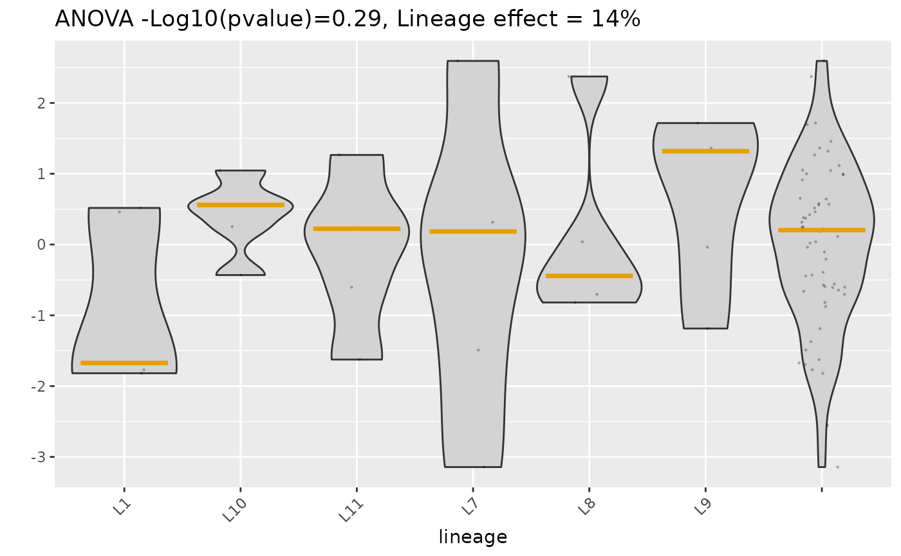

Violin plot of fate potential within lineages, with an ANOVA summary
Source:R/plot_anova.R
plot_anova.RdThe figure that shows how much of the variation in fate potential sits
between lineages versus within them — the visual form of the
selection-versus-adaptation question. One violin per selected lineage, plus a
final "All" violin pooling every scored cell as a reference.
Usage
plot_anova(
seurat_object,
cell_imputed_score,
assigned_lineage_variable,
time_celltype_variable,
day_later,
bool_add_future_size = TRUE,
bool_anova = TRUE,
bool_mark_mean = TRUE,
bool_mark_max = FALSE,
col = "#E69F00",
min_lineage_size = 2,
num_lineages_top = 10,
num_lineages_bottom = 10,
ylab = "",
ylim = NA
)Arguments
- seurat_object
A Seurat object whose
meta.datasupplies the lineage and time-celltype annotations. Only the metadata is used.- cell_imputed_score
A named numeric vector of per-cell fate potentials, names being cell IDs — the
cell_imputed_scoreelement ofcyfer_finalize, on the log10 scale. It need not cover every cell in the object; cells absent from it are ignored, andNAentries are dropped.- assigned_lineage_variable
Name of the
meta.datacolumn holding the lineage assignment.- time_celltype_variable
Name of the
meta.datacolumn whose values identify time point (possibly crossed with cell type). Used only to count each lineage's cells atday_later.- day_later
The value of
time_celltype_variablethat defines the future time point. Must occur in that column; asserted.- bool_add_future_size
Whether to append each lineage's observed future size to its axis label, as
"lineage (n)". DefaultTRUE.- bool_anova
Whether to run the ANOVA and put its result in the title. Default
TRUE.- bool_mark_mean
Whether to draw a crossbar at each violin's median — the name says mean, the code uses
stats::median. DefaultTRUE.- bool_mark_max
Whether to draw a crossbar at each violin's maximum. Default
FALSE.- col
Colour of those crossbars. Default
"#E69F00".- min_lineage_size
Minimum number of current time point cells for a lineage to be eligible. Default
2.- num_lineages_top
Number of largest-future-size lineages to draw. Default
10.- num_lineages_bottom
Number of smallest-future-size lineages to draw. Default
10.- ylab
Y axis label. Default
"".- ylim
Length-2 numeric passed to
ggplot2::ylim(). DefaultNA, meaning no limits. AnNAin one position leaves that end free.
Details
Lineages are chosen by observed future size, not by predicted score:
the num_lineages_top largest and num_lineages_bottom smallest
after filtering to lineages with at least min_lineage_size cells at
the current time point. If a lineage falls in both sets — which happens
whenever the two counts overlap the number of surviving lineages — it is
drawn once.
The title reports two numbers. The ANOVA p-value comes from
stats::oneway.test(), which does not assume equal variances
across lineages. The "lineage effect" percentage is the ordinary between-group
share of the total sum of squares, computed by .anova_percentage();
both are computed on the plotted lineages only, not on all cells.
Examples
set.seed(10)
count_mat <- matrix(stats::rpois(50 * 120, lambda = 3), nrow = 50,
dimnames = list(paste0("gene", 1:50), paste0("cell", 1:120)))
seurat_object <- suppressWarnings(Seurat::CreateSeuratObject(counts = count_mat))
seurat_object$assigned_lineage <- rep(paste0("L", 1:12), length.out = 120)
seurat_object$time_celltype <- rep(c("day0", "day7"), each = 60)
# scores for the day0 cells only, as cyfer_finalize() would return them
score_vec <- stats::rnorm(60)
names(score_vec) <- colnames(seurat_object)[1:60]
plot_anova(seurat_object = seurat_object,
cell_imputed_score = score_vec,
assigned_lineage_variable = "assigned_lineage",
time_celltype_variable = "time_celltype",
day_later = "day7",
num_lineages_top = 3,
num_lineages_bottom = 3)
